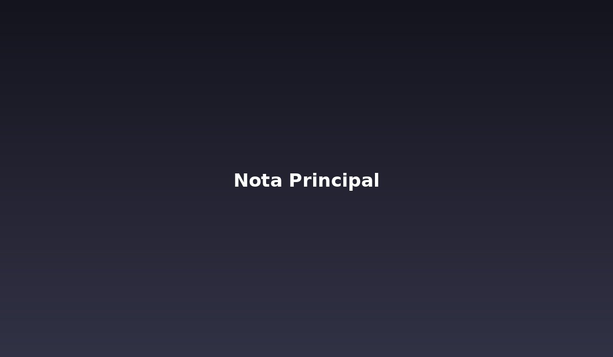

NacionalTitular principal: la nota más importante del día ocupa el primer plano
Bajada de ejemplo que resume en una o dos líneas la noticia destacada, dándole el peso visual que merece frente al resto del contenido.

NacionalBajada de ejemplo que resume en una o dos líneas la noticia destacada, dándole el peso visual que merece frente al resto del contenido.


 Entretenimiento
Entretenimiento